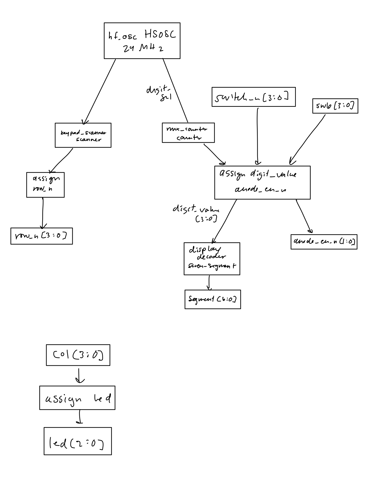
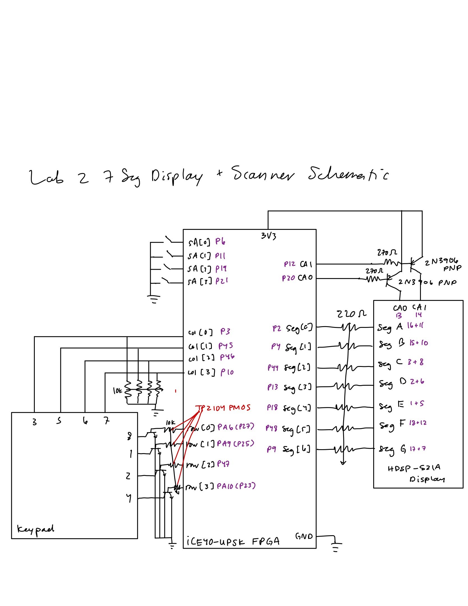
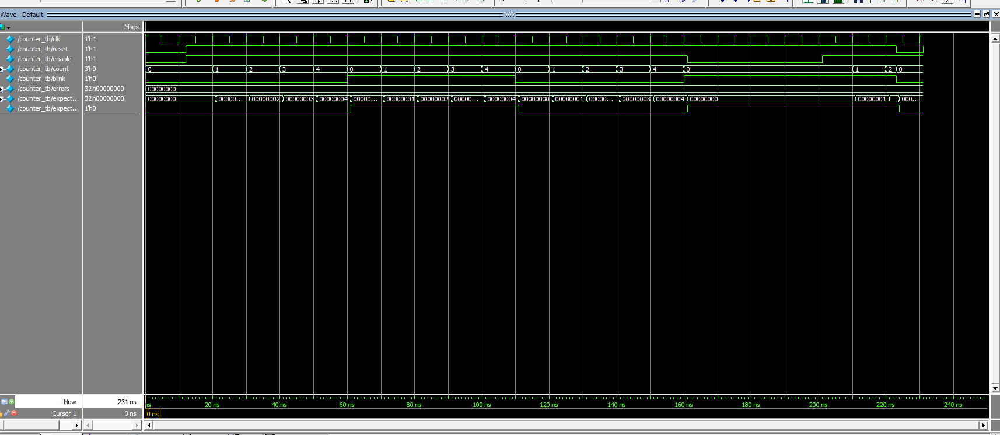
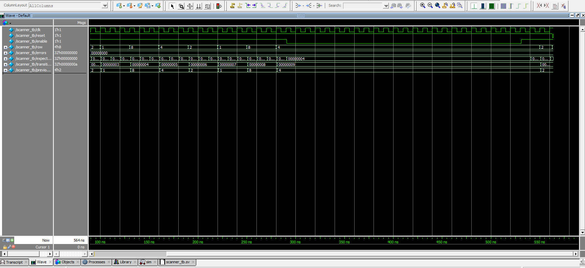
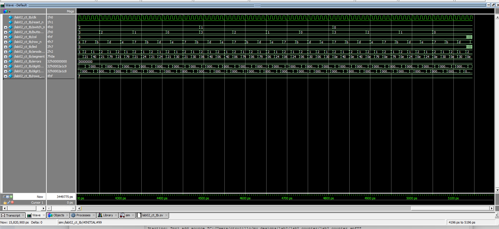

HMC E155 — Lab 2: Multiplexed 7-Segment Display and Keypad Scanning
1 Introduction
In this lab, I used one seven segment decoder to drive both digits of a dual seven segment display by time multiplexing between them. Each digit’s common anode is turned on and off with a transistor, so only one digit is on at a time but it switches fast enough that you can’t tell. The left digit shows a 4-bit number from a DIP switch I put on the breadboard and the right digit shows a 4-bit number from the SW6 DIP switch on the dev board. I also scanned a 4x4 keypad and hooked columns 1-3 up to LEDs, so when you hold down a key in one of those columns the LED blinks when the scanner gets to that row.
2 Design and Testing Methodology
2.1 Overall Design
I organized the design into a top level module, a counter, a scanner and the seven segment decoder from lab 1.
lab02_ct.sv: top level module, connects everything and does the multiplexing and LED logiccounter.sv: lab 1 counter, only change is that count is an output nowscanner.sv: keypad scanner, uses a counter to pick which row is onseven_segment.sv: lab 1 decoder, didn’t change it
2.2 Time Multiplexing
The oscillator is 24 MHz, and I want each digit on for 1 ms. N = 24×10⁶ × 0.001 = 24,000 cycles. So mux_counter toggles digit_sel every 24,000 cycles. digit_sel picks what goes into the decoder (breadboard DIP switch or SW6) and which digit gets turned on with anode_en_n. Each digit is on 1 ms out of every 2 ms, so the refresh rate is 500 Hz and it doesn’t flicker.
Both DIP switches connect the pin to ground when they’re ON, so i invert them in the top level.
2.3 Keypad Scanning
The scanner uses a counter to rotate which row is on: 1000, 0100, 0010, 0001. Each row is on for 0.25 s, so N = 24×10⁶ × 0.25 = 6,000,000 cycles per row, and each row bit toggles at 2 Hz. Each row goes to a TP2104 PMOS that pulls the keypad row up to 3.3 V when that row is on. If you press a key in the row that’s on, it pulls its column high, and the top level just copies columns 1-3 to LEDs D6-D8.
2.4 Testing Methodology
I didn’t change the decoder from lab 1 so I didn’t re-simulate it (lab 1 simulation). I made self-checking testbenches for the counter (since I changed it), the scanner and the top level.
3 Technical Documentation
3.1 Verilog Source Code
lab02_ct.sv: top level
// lab02_ct: top level.
// Time-multiplexes one seven-segment decoder across the two digits of an HDSP-521A
// (common-anode dual display), each anode switched high-side by a 2N3906 PNP:
// digit 0 = breadboard DIP switch (4 bits), digit 1 = development board DIP switch SW6 (4 bits).
// Scans a 4x4 keypad (rows driven high through TP2104 PMOS, open-drain style, with pull-downs)
// and passes columns 1-3 to LEDs
// (column 4 has no LED: no FPGA pin was left to reach one).
module lab02_ct #(
parameter int unsigned MUX_TOGGLE_CYCLES = 24_000, // 1 ms per digit at 24 MHz
parameter int unsigned SCAN_CYCLES_PER_ROW = 6_000_000 // 0.25 s per row: each row bit toggles at 2 Hz
)(
input logic reset_n, // active-low reset (internal pull-up keeps it high)
input logic [3:0] switch_n, // breadboard DIP switch to GND, ON = 0
input logic [3:0] onboard_switch_n, // onboard DIP switch SW6, ON = 0
input logic [3:0] col, // keypad columns, 1 = key pressed in the active row
output logic [3:0] row_n, // keypad row PMOS gates, 0 = row pulled high (active)
output logic [2:0] led, // keypad columns 1-3 pass-through, 1 = on
output logic [1:0] anode_en_n, // digit PNP bases, 0 = digit on
output logic [6:0] segment // {g,f,e,d,c,b,a}, 0 = lit
);
logic int_osc;
logic digit_sel;
logic [$clog2(MUX_TOGGLE_CYCLES)-1:0] mux_count_unused;
logic [3:0] digit_value;
logic [3:0] row_active;
// internal oscillator, 24 MHz
HSOSC #(.CLKHF_DIV(2'b01))
hf_osc (
.CLKHFPU(1'b1),
.CLKHFEN(1'b1),
.CLKHF(int_osc)
);
// digit select: toggles every MUX_TOGGLE_CYCLES
counter #(
.MAX_COUNT(MUX_TOGGLE_CYCLES)
) mux_counter (
.clk(int_osc),
.reset(reset_n),
.enable(1'b1),
.count(mux_count_unused),
.blink(digit_sel)
);
// keypad row scanner
scanner #(
.CYCLES_PER_ROW(SCAN_CYCLES_PER_ROW)
) keypad_scanner (
.clk(int_osc),
.reset(reset_n),
.enable(1'b1),
.row(row_active)
);
// multiplexing
assign digit_value = digit_sel ? ~onboard_switch_n : ~switch_n;
assign anode_en_n = digit_sel ? 2'b01 : 2'b10;
// single decoder (lab 1, active-low segments: 0 = lit)
seven_segment display_decoder (
.s(digit_value),
.segment(segment)
);
// PMOS gates are active-low
assign row_n = ~row_active;
// LED pass-through: LED on when its column is pulled high
assign led = col[2:0];
endmodulecounter.sv: lab 1 counter with a count output
// counter: lab 1 counter, reused for lab 2.
// Sequential, asynchronous active-low reset.
// While enable is high, count runs 0 .. MAX_COUNT-1 and wraps; blink toggles on every wrap.
// Lab 2 change: count is now an output port so the scanner can decode it.
module counter #(
parameter int unsigned MAX_COUNT = 10_000_000
)(
input logic clk,
input logic reset,
input logic enable,
output logic [$clog2(MAX_COUNT)-1:0] count,
output logic blink
);
always_ff @(posedge clk, negedge reset) begin
if (!reset) begin
count <= 0;
blink <= 0;
end
else if (enable) begin
if (count == MAX_COUNT - 1) begin
count <= 0;
blink <= ~blink; // toggle on wrap
end
else begin
count <= count + 1;
end
end
end
endmodulescanner.sv: keypad row scanner
// scanner: keypad row scanner.
// Sequential (counter state), asynchronous active-low reset, enable holds the current row.
// row rotates 1000 -> 0100 -> 0010 -> 0001, spending CYCLES_PER_ROW clock cycles on each.
// Non-canonical state machine: the counter is the state, the assign is the output logic.
module scanner #(
parameter int unsigned CYCLES_PER_ROW = 6_000_000 // 0.25 s at 24 MHz
)(
input logic clk,
input logic reset,
input logic enable,
output logic [3:0] row
);
localparam int unsigned SCAN_PERIOD = 4 * CYCLES_PER_ROW;
logic [$clog2(SCAN_PERIOD)-1:0] scan_count;
logic scan_wrap_unused;
counter #(
.MAX_COUNT(SCAN_PERIOD)
) scan_counter (
.clk(clk),
.reset(reset),
.enable(enable),
.count(scan_count),
.blink(scan_wrap_unused)
);
assign row = (scan_count < CYCLES_PER_ROW) ? 4'b1000 :
(scan_count < 2 * CYCLES_PER_ROW) ? 4'b0100 :
(scan_count < 3 * CYCLES_PER_ROW) ? 4'b0010 :
4'b0001;
endmoduleseven_segment.sv: lab 1 decoder (unchanged)
module seven_segment(
input logic [3:0] s,
output logic [6:0] segment
);
always_comb begin
case (s)
4'h0: segment = 7'b1000000;
4'h1: segment = 7'b1111001;
4'h2: segment = 7'b0100100;
4'h3: segment = 7'b0110000;
4'h4: segment = 7'b0011001;
4'h5: segment = 7'b0010010;
4'h6: segment = 7'b0000010;
4'h7: segment = 7'b1111000;
4'h8: segment = 7'b0000000;
4'h9: segment = 7'b0010000;
4'hA: segment = 7'b0001000;
4'hB: segment = 7'b0000011;
4'hC: segment = 7'b1000110;
4'hD: segment = 7'b0100001;
4'hE: segment = 7'b0000110;
4'hF: segment = 7'b0001110;
default: segment = 7'b1111111;
endcase
end
endmodulecounter_tb.sv
// counter_tb: automatic testbench for counter (re-verifies the lab 1 counter after adding the count output).
// Checks: reset values, counting and wrap, blink toggling on wrap, enable hold, asynchronous reset.
module counter_tb();
localparam int unsigned MAX_COUNT = 5;
logic clk, reset, enable;
logic [$clog2(MAX_COUNT)-1:0] count;
logic blink;
int errors;
int expected_count;
logic expected_blink;
counter #(
.MAX_COUNT(MAX_COUNT)
) dut (
.clk(clk),
.reset(reset),
.enable(enable),
.count(count),
.blink(blink)
);
// 10 ns clock
always begin
clk = 1; #5;
clk = 0; #5;
end
task automatic check(input string label);
if (count !== expected_count || blink !== expected_blink) begin
$display("ERROR (%s) t=%0t: count=%0d blink=%b, expected count=%0d blink=%b",
label, $time, count, blink, expected_count, expected_blink);
errors++;
end
endtask
// advance the reference model by one enabled clock
task automatic step_expected();
if (expected_count == MAX_COUNT - 1) begin
expected_count = 0;
expected_blink = ~expected_blink;
end
else begin
expected_count++;
end
endtask
initial begin
errors = 0;
expected_count = 0;
expected_blink = 0;
enable = 0;
reset = 0;
// reset
#12;
check("reset");
reset = 1;
enable = 1;
// three full wraps: count 0..MAX_COUNT-1, blink toggles each wrap
repeat (3 * MAX_COUNT) begin
@(posedge clk); #1;
step_expected();
check("count");
end
// enable low: hold
enable = 0;
repeat (4) begin
@(posedge clk); #1;
check("enable hold");
end
// count a bit more, then assert reset between clock edges
enable = 1;
repeat (2) begin
@(posedge clk); #1;
step_expected();
check("count");
end
#2;
reset = 0;
#1;
expected_count = 0;
expected_blink = 0;
check("async reset");
@(posedge clk); #1;
check("held in reset");
reset = 1;
$display("counter_tb: done with %0d errors", errors);
$stop;
end
endmodulescanner_tb.sv
// scanner_tb: automatic testbench for scanner.
// Checks: reset to 1000, all four transitions (1000->0100->0010->0001->1000),
// CYCLES_PER_ROW cycles per row, enable hold, asynchronous reset.
module scanner_tb();
localparam int unsigned CYCLES_PER_ROW = 3;
localparam int unsigned SCAN_PERIOD = 4 * CYCLES_PER_ROW;
logic clk, reset, enable;
logic [3:0] row;
int errors;
int expected_count; // reference model of the scan counter
int transitions_seen;
logic [3:0] previous_row;
scanner #(
.CYCLES_PER_ROW(CYCLES_PER_ROW)
) dut (
.clk(clk),
.reset(reset),
.enable(enable),
.row(row)
);
// 10 ns clock
always begin
clk = 1; #5;
clk = 0; #5;
end
function automatic logic [3:0] expected_row(input int count);
case (count / CYCLES_PER_ROW)
0: return 4'b1000;
1: return 4'b0100;
2: return 4'b0010;
default: return 4'b0001;
endcase
endfunction
task automatic check(input string label);
if (row !== expected_row(expected_count)) begin
$display("ERROR (%s) t=%0t: row=%b, expected %b",
label, $time, row, expected_row(expected_count));
errors++;
end
endtask
task automatic clock_and_check(input string label);
previous_row = row;
@(posedge clk); #1;
if (enable) expected_count = (expected_count + 1) % SCAN_PERIOD;
check(label);
if (row !== previous_row) begin
transitions_seen++;
$display("t=%0t: row %b -> %b", $time, previous_row, row);
end
endtask
initial begin
errors = 0;
expected_count = 0;
transitions_seen = 0;
enable = 0;
reset = 0;
// reset
#12;
check("reset");
reset = 1;
enable = 1;
// two full rotations: 8 transitions
repeat (2 * SCAN_PERIOD) clock_and_check("scan");
if (transitions_seen != 8) begin
$display("ERROR: saw %0d row transitions, expected 8", transitions_seen);
errors++;
end
// move into the middle of row 0100, then disable: row must hold
repeat (CYCLES_PER_ROW + 1) clock_and_check("scan");
enable = 0;
repeat (2 * SCAN_PERIOD) clock_and_check("enable hold");
// re-enable, then reset between clock edges: back to 1000 immediately
enable = 1;
repeat (CYCLES_PER_ROW) clock_and_check("scan");
#2;
reset = 0;
#1;
expected_count = 0;
check("async reset");
reset = 1;
$display("scanner_tb: done with %0d errors", errors);
$stop;
end
endmodulelab02_ct_tb.sv
// lab02_ct_tb: automatic testbench for the top level.
// Checks multiplexing (each digit shows the right number on the right anode_en_n, for every input),
// LED pass-through for every column pattern, and that the keypad row output is always one-hot.
// Needs the Radiant iCE40UP simulation library for HSOSC (vsim -L iCE40UP); the clock is forced from here.
module lab02_ct_tb();
localparam int unsigned MUX_TOGGLE_CYCLES = 2;
localparam int unsigned SCAN_CYCLES_PER_ROW = 3;
logic clk;
logic reset_n;
logic [3:0] switch_n;
logic [3:0] onboard_switch_n;
logic [3:0] col;
logic [3:0] row_n;
logic [2:0] led;
logic [1:0] anode_en_n;
logic [6:0] segment;
int errors;
int digit0_checks, digit1_checks;
logic [3:0] rows_seen;
lab02_ct #(
.MUX_TOGGLE_CYCLES(MUX_TOGGLE_CYCLES),
.SCAN_CYCLES_PER_ROW(SCAN_CYCLES_PER_ROW)
) dut (
.reset_n(reset_n),
.switch_n(switch_n),
.onboard_switch_n(onboard_switch_n),
.col(col),
.row_n(row_n),
.led(led),
.anode_en_n(anode_en_n),
.segment(segment)
);
// 10 ns clock replaces the HSOSC output
always begin
clk = 1; #5;
clk = 0; #5;
end
initial force dut.int_osc = clk;
// expected lit segments {g,f,e,d,c,b,a}, 1 = lit (independent of the DUT's decoder);
// the DUT drives active-low, so outputs are compared against the inverse
function automatic logic [6:0] expected_segment(input logic [3:0] value);
case (value)
4'h0: return 7'b0111111;
4'h1: return 7'b0000110;
4'h2: return 7'b1011011;
4'h3: return 7'b1001111;
4'h4: return 7'b1100110;
4'h5: return 7'b1101101;
4'h6: return 7'b1111101;
4'h7: return 7'b0000111;
4'h8: return 7'b1111111;
4'h9: return 7'b1101111;
4'hA: return 7'b1110111;
4'hB: return 7'b1111100;
4'hC: return 7'b0111001;
4'hD: return 7'b1011110;
4'hE: return 7'b1111001;
default: return 7'b1110001; // F
endcase
endfunction
// check the display and keypad outputs on every falling edge
always @(negedge clk) begin
if (reset_n) begin
case (anode_en_n)
2'b10: begin
digit0_checks++;
if (segment !== ~expected_segment(~switch_n)) begin
$display("ERROR t=%0t: digit 0, switch_n=%b, segment=%b expected %b",
$time, switch_n, segment, ~expected_segment(~switch_n));
errors++;
end
end
2'b01: begin
digit1_checks++;
if (segment !== ~expected_segment(~onboard_switch_n)) begin
$display("ERROR t=%0t: digit 1, onboard_switch_n=%b, segment=%b expected %b",
$time, onboard_switch_n, segment, ~expected_segment(~onboard_switch_n));
errors++;
end
end
default: begin
$display("ERROR t=%0t: anode_en_n=%b does not enable exactly one digit", $time, anode_en_n);
errors++;
end
endcase
if (!$onehot(~row_n)) begin
$display("ERROR t=%0t: row_n=%b does not drive exactly one row", $time, row_n);
errors++;
end
rows_seen |= ~row_n;
end
end
initial begin
errors = 0;
digit0_checks = 0;
digit1_checks = 0;
rows_seen = 4'b0000;
switch_n = 4'b1111;
onboard_switch_n = 4'b1111;
col = 4'b0000;
reset_n = 0;
#12;
reset_n = 1;
// multiplexing: every breadboard switch value with every SW6 value, long enough to see both digits
for (int sw = 0; sw < 16; sw++) begin
for (int sw_b = 0; sw_b < 16; sw_b++) begin
switch_n = ~sw[3:0];
onboard_switch_n = ~sw_b[3:0];
repeat (4 * MUX_TOGGLE_CYCLES) @(posedge clk);
end
end
// LED pass-through: every column pattern
for (int col_value = 0; col_value < 16; col_value++) begin
col = col_value[3:0];
#1;
if (led !== col[2:0]) begin
$display("ERROR: col=%b, led=%b expected %b", col, led, col[2:0]);
errors++;
end
end
if (digit0_checks == 0 || digit1_checks == 0) begin
$display("ERROR: a digit was never enabled (digit 0: %0d checks, digit 1: %0d checks)",
digit0_checks, digit1_checks);
errors++;
end
if (rows_seen !== 4'b1111) begin
$display("ERROR: not every keypad row was driven (rows seen %b)", rows_seen);
errors++;
end
$display("lab02_ct_tb: digit 0 checked %0d times, digit 1 checked %0d times",
digit0_checks, digit1_checks);
$display("lab02_ct_tb: done with %0d errors", errors);
$stop;
end
endmodule3.2 Pin Assignments
pins.pdc
# lab02 pin constraints (iCE40UP5K, SG48)
# Everything off the development board goes through the E155 breadboard adapter.
# Development board SW7 (MCU bridge DIP): switches 1, 3, 8 ON, switches 2, 4, 5, 6, 7 OFF.
# ON: #1 PA9 <-> P25 (row 2), #3 PA6 <-> P27 (row 1), #8 PA10 <-> P23 (row 4)
# OFF: #4 P20, #5 P10, #6 P12, #7 P21 are wired directly; #2 keeps P26 (reset) unconnected
# The Nucleo must not drive PA6, PA9 or PA10.
# reset on P26: not wired to anything (SW7 #2 OFF), internal pull-up holds it high
ldc_set_location -site {26} [get_ports reset_n]
# breadboard DIP switch (pin -> switch -> GND, internal pull-ups); P21 = MSB
ldc_set_location -site {21} [get_ports {switch_n[3]}]
ldc_set_location -site {19} [get_ports {switch_n[2]}]
ldc_set_location -site {11} [get_ports {switch_n[1]}]
ldc_set_location -site {6} [get_ports {switch_n[0]}]
# onboard DIP switch SW6 (switch to GND, internal pull-ups); switch 1 = MSB, switch 4 = LSB
ldc_set_location -site {32} [get_ports {onboard_switch_n[3]}]
ldc_set_location -site {35} [get_ports {onboard_switch_n[2]}]
ldc_set_location -site {31} [get_ports {onboard_switch_n[1]}]
ldc_set_location -site {37} [get_ports {onboard_switch_n[0]}]
# keypad columns (inputs, external 10k pull-downs to GND; they overpower the internal 100k pull-ups)
ldc_set_location -site {3} [get_ports {col[0]}]
ldc_set_location -site {45} [get_ports {col[1]}]
ldc_set_location -site {46} [get_ports {col[2]}]
ldc_set_location -site {10} [get_ports {col[3]}]
# keypad rows (to TP2104 PMOS gates, low = row active; rows 1, 2, 4 through SW7 and the adapter MCU pins, row 3 direct)
ldc_set_location -site {27} [get_ports {row_n[0]}]
ldc_set_location -site {25} [get_ports {row_n[1]}]
ldc_set_location -site {47} [get_ports {row_n[2]}]
ldc_set_location -site {23} [get_ports {row_n[3]}]
# column LEDs on the board: D6 = column 1, D7 = column 2, D8 = column 3 (column 4 has none)
ldc_set_location -site {42} [get_ports {led[0]}]
ldc_set_location -site {38} [get_ports {led[1]}]
ldc_set_location -site {28} [get_ports {led[2]}]
# digit enables (to 2N3906 bases through 330 ohm, low = digit on)
ldc_set_location -site {20} [get_ports {anode_en_n[0]}]
ldc_set_location -site {12} [get_ports {anode_en_n[1]}]
# segments a..g (active-low, HDSP-521A common anode; each line feeds both digits)
ldc_set_location -site {2} [get_ports {segment[0]}]
ldc_set_location -site {4} [get_ports {segment[1]}]
ldc_set_location -site {44} [get_ports {segment[2]}]
ldc_set_location -site {13} [get_ports {segment[3]}]
ldc_set_location -site {18} [get_ports {segment[4]}]
ldc_set_location -site {48} [get_ports {segment[5]}]
ldc_set_location -site {9} [get_ports {segment[6]}]
# internal 100k pull-ups on reset and both DIP switches
ldc_set_port -iobuf {PULLMODE=100K} [get_ports reset_n]
ldc_set_port -iobuf {PULLMODE=100K} [get_ports {switch_n[0]}]
ldc_set_port -iobuf {PULLMODE=100K} [get_ports {switch_n[1]}]
ldc_set_port -iobuf {PULLMODE=100K} [get_ports {switch_n[2]}]
ldc_set_port -iobuf {PULLMODE=100K} [get_ports {switch_n[3]}]
ldc_set_port -iobuf {PULLMODE=100K} [get_ports {onboard_switch_n[0]}]
ldc_set_port -iobuf {PULLMODE=100K} [get_ports {onboard_switch_n[1]}]
ldc_set_port -iobuf {PULLMODE=100K} [get_ports {onboard_switch_n[2]}]
ldc_set_port -iobuf {PULLMODE=100K} [get_ports {onboard_switch_n[3]}]3.3 Block Diagram

3.4 Hardware Schematic

SW6, LEDs D6-D8 and SW7 are on the dev board so I didn’t draw them, they’re in the development board schematic. Both DIP switches use the FPGA’s internal pull-ups.
3.5 Current Calculations
FPGA max current per pin: 8 mA (iCE40UP5K datasheet, Table 4.13).
Segment pins (HDSP-521A datasheet) Supply V_CC = 3.3 V. Datasheet forward voltage: V_F = 2.0 V typ at 20 mA. From Figure 2 it’s around 1.8 V at ~6 mA, so for worst case (most current) I used V_F = 1.7 V. PNP drop: V_EC(sat) = 0.2 V.
I = (3.3 V − 0.2 V − 1.7 V) / 220 Ω ≈ 6.4 mA
Under 8 mA and way under the display’s 20 mA max per segment!
Digit enable pins (2N3906 base through 330 Ω) I = (3.3 V − 0.7 V) / 330 Ω ≈ 7.9 mA
Keypad row pins These go to the TP2104 gates which basically don’t draw current. The dev board LEDs on PA6, PA9 and PA10 add (3.3 V − 2.0 V) / 1 kΩ ≈ 1.3 mA.
LED pins (D6-D8, 1 kΩ on the board) I ≤ 3.3 V / 1 kΩ = 3.3 mA
Input pins only have the internal pull-up current, which is ≤ 128 µA.
All under 8 mA!
4 Simulation Results
The seven segment decoder was already tested in lab 1: lab 1 decoder simulation.
4.1 Counter Test
counter_tb waveform

4.2 Scanner Test
scanner_tb waveform

4.3 Top-Level Test
lab02_ct_tb waveform

5 Requirements Checklist
This design meets all Proficiency specifications. The one thing that doesn’t work is the bottom row of the keypad (*, 0, #), it doesn’t light up the LEDs. Some other things I did differently from the lab handout:
- I used 2N3906 PNPs to switch the digits instead of TP2104 PMOS, and used TP2104 PMOS with pull-down resistors for the keypad rows instead of TN2106 NMOS.
- One 4-bit number comes from a DIP switch on the breadboard and the other one comes from SW6 on the dev board.
- Keypad column 4 (A-D) doesn’t have an LED because I ran out of FPGA pins on the breadboard adapter.
6 Conclusion
Met all proficiency specifications. Spent ~21 hours on this lab.
7 AI Prototype and Reflection
7.1 AI Prototype
7.2 Reflection
How would you rate the quality of the output and why?
What SystemVerilog constructs/syntax did the LLM generate that were new to you?
Did the LLM-generated code synthesize the first time around? If not, what were the issues? What error or warning messages did Radiant output?
What would you do differently the next time you use an LLM in your workflow?